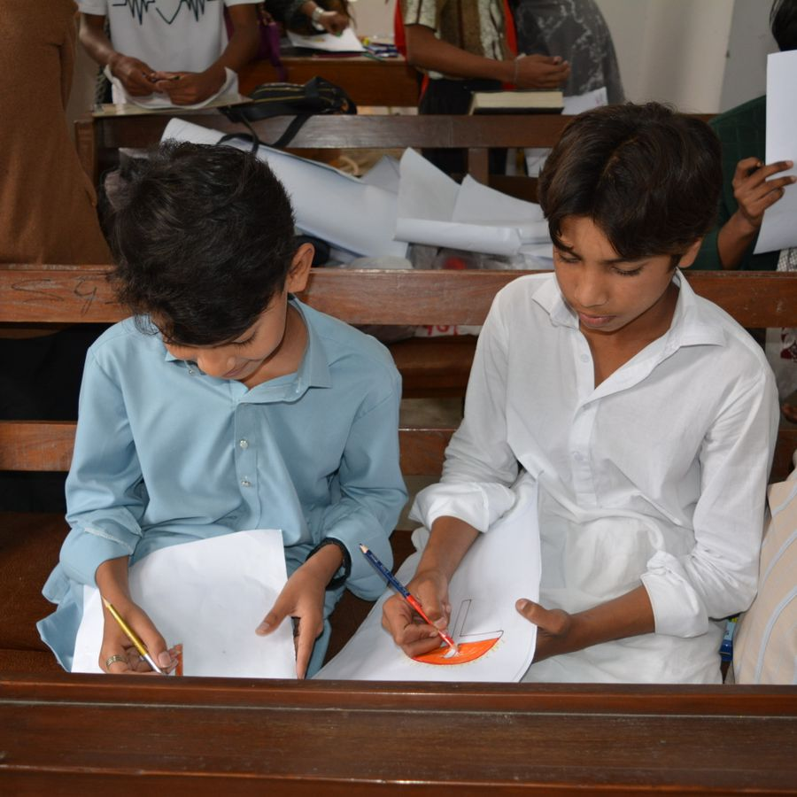

Kenangan Bersama
Galeri Foto
Momen ibadah, kegiatan, dan persekutuan di GBI Banyumanik.
Koleksi foto galeri
Ibadah Minggu Pagi
23 Aug 2026

Sekolah Minggu Anak
16 Aug 2026
Persekutuan Pemuda
09 Aug 2026
Ibadah Minggu: 07.00 & 10.00 WIB · Persekutuan Doa: Rabu 19.00 WIB
Kenangan Bersama
Momen ibadah, kegiatan, dan persekutuan di GBI Banyumanik.
Ibadah Minggu Pagi
23 Aug 2026

Sekolah Minggu Anak
16 Aug 2026
Persekutuan Pemuda
09 Aug 2026